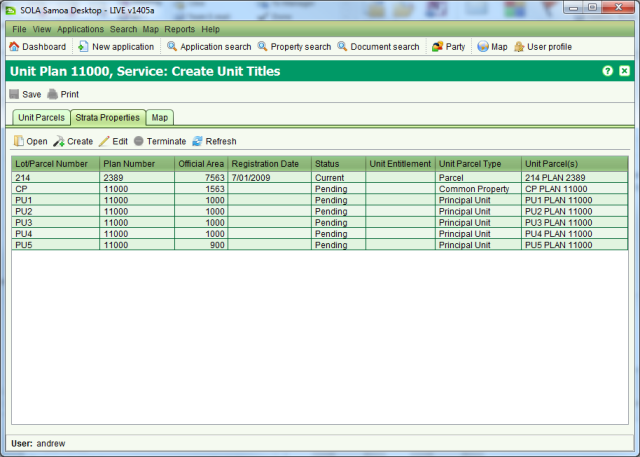

Create Unit Title Folios
Once the unit plan is approved, folios for the unit parcels can be created by the Land
Registration Team using the Create Unit Titles service. Note that the Create Unit
Titles service can also be used to create any additional folios for the unit development
following the approval of a Redevelopment plan.
Lodge Application
A member of the Land Registration Team will lodge a new application to create the Unit Title
folios when they see an approved Record Unit Plan application appear in the Unassigned
Applications list.
Steps
-
-
From the Dashboard select the
 New
application tool to open the Application Details screen.
New
application tool to open the Application Details screen.
-
On the General tab, enter the Agent (i.e. surveyor) details as noted on the application
used to process the unit plan.
-
On the Services tab add the Create Unit Titles service. Only one Create Unit Titles
service is required regardless of the number of unit titles that must be created.
-
On the Property tab, enter the folio reference for the underlying property of the unit
plan. Important: This must be the same underlying property that was recorded for
the Record Unit Plan application.
-
On the Documents tab, create a Unit Plan document and use the Document search to link
to the approved unit plan image.
-
Create documents for the Body Corporate Rules and Schedule of Unit Entitlements,
linking these documents to their scanned copies if available.
-
On the fees tab, check the Fee Paid checkbox as the Create Unit Titles service does not
incur any fees, then click the
 Save
button. This will lodge the application and produce the lodgment notice. You can close
the lodgment notice without printing it. If you do not have permission to check the Fee
Paid checkbox, save the application and arrange for a person with the appropriate
privilege to do this for you.
Save
button. This will lodge the application and produce the lodgment notice. You can close
the lodgment notice without printing it. If you do not have permission to check the Fee
Paid checkbox, save the application and arrange for a person with the appropriate
privilege to do this for you.
-
Once the new Land Registration application has been lodged, open the approved
application used to process the unit plan and archive it using the
 Archive action in the Application action dropdown.
Archive action in the Application action dropdown.
Create Unit Titles
Steps
-
-
Ensure you are Assignee for the Land Registration Application and open it from your
Dashboard.
-
On the Services tab,
 Start the Create
Unit Titles service. This will open the Unit Title screen. Check the list of unit
parcels and make sure all Principal and Accessory units are listed then go to the
Strata Properties tab. This will show the underlying property record for the Unit Title
Development.
Start the Create
Unit Titles service. This will open the Unit Title screen. Check the list of unit
parcels and make sure all Principal and Accessory units are listed then go to the
Strata Properties tab. This will show the underlying property record for the Unit Title
Development.
-
Click the
 Create tool. SOLA will create
stub folio’s for the Common Property and each of the Principal Unit parcels displaying
these in the Strata Properties table.
Create tool. SOLA will create
stub folio’s for the Common Property and each of the Principal Unit parcels displaying
these in the Strata Properties table.

Strata Properties generated by SOLA
Each of the stub folios generated by SOLA must now be checked and completed starting with
the Common Property.
Complete the Common Property Folio
-
-
Select the Common Property record in the Strata Properties table and click the
 Edit tool.
Edit tool.
-
The Property Details screen will display. Check each tab of the Property Details
screen. You will see that many of the details for the Common Property have already been
set such as the area, the parcel as well as the Related properties. You will also see
three rights on the Rights/Restrictions tab; Body Corporate Rules, Address for Service
and an ownership right that will be Leasehold or Freehold depending on the estate type
of the underlying property.
-
From the Rights / Restrictions tab, select Body Corporate Rules and click the
 Edit tool.
Edit tool.
-
In the Body Corporate Rules screen, link the Body Corporate Rules document from the
application by adding or searching for it thenSave & Close. Note that you can change the default
Memorial text as well if it is not appropriate.
-
Edit the Address for Service
right and enter the correct Address for Service in the Memorial text field andSave & Close. You can also add any
relevant documents to this right.
-
Check the default ownership details on the ownership right (i.e. Body Corporate of …)
and update them if required.
-
If there are any easements across the Common Property, select Easement in the Right
type dropdown and click theCreate
tool. Enter the details of the easement(s) as necessary.
-
Add any other rights or restrictions to the Common Property as required
-
Check that the Village and Prior Title details on the Related property tab are correct
and update them if required. Note: You will see that each of the Principal Unit
folios is linked to the Common Property. This linkage establishes the relationship
between the unit properties and identifies them as being part of the same Unit Title
Development.
-
When complete,Save changes then close
the Property Details screen.
Complete the Principal Unit Folios
Steps
-
-
Select the first Principal Unit in the Strata Properties table and click theEdit tool.
-
The Property Details screen will display. Check each tab of the Property Details
screen. As with the Common Property, many of the details will already be set. You only
need to check and complete any remaining details.
-
On the Parcels tab you will see the Principal Unit parcel. SOLA does not create folios
for Accessory Units as they must reference a Principal Unit. If there are any Accessory
Units related to this Principal Unit, use the
 Add parcel to search and link those Accessory Unit parcels to
this Principal Unit folio. Important: For each Accessory Unit you add to the
Principal Unit, you will need to increase the area of the Principal Unit folio
accordingly so that the folio represents the combined area of the Principal Unit parcel
and all of the Accessory Unit parcels.
Add parcel to search and link those Accessory Unit parcels to
this Principal Unit folio. Important: For each Accessory Unit you add to the
Principal Unit, you will need to increase the area of the Principal Unit folio
accordingly so that the folio represents the combined area of the Principal Unit parcel
and all of the Accessory Unit parcels.
-
From the Rights / Restrictions tab, select Unit Entitlement and click theEdit tool.
-
In the Unit Entitlement field, enter the sum of the unit entitlements for this
Principal Unit and any Accessory Units linked to it. SOLA does not support recording
the unit entitlement for the Principal Unit and each Accessory Unit individually. The
Unit Entitlement document can be viewed if individual entitlements must be determined.
-
Update the Memorial text and link the Unit Entitlements document to this right. Make
any other changes as required andSave
& Close.
-
By default, the ownership right identifies the owner(s) of the underlying property as
the owner(s) for the Principal Unit property. Update the ownership details if required.
-
If there are any easements across the Principal Unit or any of its Accessory Units,
select Easement in the Right type dropdown and click theCreate tool. Enter the details of the easement(s) as
necessary.
-
Add any other rights or restrictions to the Principal Unit as required.
-
Check that the Village and Common Property details on the Related property tab are
correct and update them if required. Note: Only the Common Property will
reference the underlying property as its Prior Title. Principal Units should only
reference the Village and the Common Property. This ensures changes to the underlying
property can be easily managed without needing to update all Principal Units.
-
When complete,Save changes then close
the Property Details screen.
-
Repeat steps 2 to 11 for each Principal Unit.
Complete the Create Unit Titles service
Steps
-
-
Once the Common Property and the Principal Unit folios have been updated, close the
Unit Titles screen and
 Complete the Create Unit Titles service. If any business
rule failures occur, verify the cause of the failures and fix the errors.
Complete the Create Unit Titles service. If any business
rule failures occur, verify the cause of the failures and fix the errors.
-
Continue processing the application and use the
 Approve tool to register all of the unit
title folios.
Approve tool to register all of the unit
title folios.
Notes
-
-
At approval of the Create Unit Titles application, several actions occur. The Principal
Units folios and Common Property folio become Current. If the underlying property is a
Freehold estate, it will become Dormant. The reason the underlying property is not made
historic/cancelled, is that it may be reinstated at a later time if the Unit Title
Development is subsequently cancelled. It is also necessary to maintain the underlying
property in case a redevelopment plan results in subdivision or amalgamation of the
underlying property.
-
If the underlying property is Leasehold, it will remain Current to reflect its
Leasehold status.
-
Once registered, the unit title folios can be treated the same as any other folio in
SOLA. It is possible to register and discharge mortgages, change ownership or preform
any of the other registration transactions against the unit title folios including the
Common Property folio. Transactions pertaining to Accessory Units such as leasing of an
Accessory Unit should also be registered on the Principal Unit folio along with an
appropriate memorial.